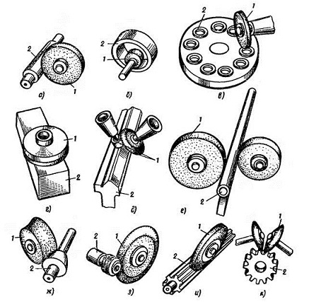
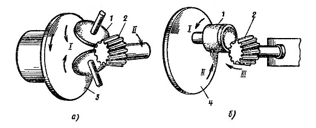

В зависимости от формы обрабатываемой поверхности различают следующие виды шлифования: круглое наружное (а) и внутреннее (б), плоское периферией (в) и торцем (г и д) круга, бесцентровое (е), профильное (ж), резьбошлифование (з), шлице- и зубошлифование (и и к).
Круглое шлифование периферией и торцом круга предназначено для обработки деталей типа тел вращения и является основным способом, обеспечивающим высокую точность. Оно может осуществляться с установкой детали в невращающихся центрах и в кулачковом или цанговом патроне вращающегося шпинделя станка.
Диаметр круга Dк не зависит от диаметра обрабатываемой детали dд и определяется прочностью круга, параметрами станка и технологическими факторами обработки.
Круглое шлифование можно осуществлять как периферией круга (в основном), так и его торцом; при этом в качестве режущей части используют наружную или торцовую поверхность шлифовального круга.
Способом внутреннего шлифования обрабатывают цилиндрические, конические и профильные отверстия. При внутреннем шлифовании в патроне и бесцентровом шлифовании подача осуществляется вследствие вращения детали со скоростью Vд. При внутреннем шлифовании крупногабаритных деталей деталь неподвижна, а шпиндель шлифовального круга совершает вращение вокруг оси обрабатываемого отверстия. Диаметр круга при внутреннем шлифовании выбирают наибольшим допустимым диаметром обрабатываемого отверстия. При диаметре отверстия dотв=30-40 мм диаметр шлифовального круга Dк=0,95dотв; при dотв=50-150 мм Dк=(0,85-0,75)dотв; при dотв более 150 мм Dк=0,5dотв.
При бесцентровом шлифования деталь не закрепляют в центрах или в патроне, а базируют по обрабатываемой или ранее обработанной поверхности.
При бесцентровом шлифовании деталь не закрепляют в центрах или в патроне, а базируют по обрабатываемой или ранее обработанной поверхности.
Плоское шлифование периферией круга осуществляется шлифовальными кругами типа ПП (ГОСТ2424—83) диаметром 100 — 500 мм и шириной 8 — 75 мм (реже до 100 мм).
Шлифуемые детали в зависимости от материала, формы и размеров крепят на рабочей поверхности основного стола или на электромагнитной плите.
При шлифовании торцовых поверхностей применяют широкие круги типов ПВ и ПВД.
В целях сохранения рабочей скорости крута постоянной при ппоском шлифовании широко применяют станки, работающие торцом круга типа К, ЧК, ЧЦ, ПН, а также сегменты, закрепленные в специальной сегментной головке.
Профильное шлифование. Шлифование поверхностей деталей, образующая которых является кривой или ломаной линией, называют профильным шлифованием
Резьбо- и зубошлифование применяют при изготовлении резьбонарезных (резьбообразующих) режущих инструментов (метчиков, резьбонакатных головок), ходовых винтов, зубчатых колес и делительных дисков.
Резьбошлифованые — шлифование боковых сторон и впадин профиля резьбы. Образование винтовой поверхности резьбообразующего инструмента осуществляется профильным инструментом.
Зубошлифование. Наибольшее применение в машиностроении получили зубчатые колеса из закаленных сталей с твердостью рабочих поверхностей HRC48 — 60, которые выполняют 4—7-й степени точности в зависимости от условий работы. Рабочие поверхности зубьев должны иметь следующие параметры шероховатости: для 4—5-й степени точности Ra = 0,2-0,6 мкм; для 6—7-й степени точности Ra = 0,8-1,4 мкм. Шлифование зубьев может осуществляться методами копирования или обкатывания.
Шлифование зубьев колес по методу обкатывания чаще всего осуществляют двумя тарельчатыми шлифовальными кругами, расположенными так, что их рабочие поверхности образуют зуб производящей рейки того же модуля и угла зацепления, что и обрабатываемое колесо. При шлифовании впадин зуба обрабатываемое колесо перемещается в направлении, перпендикулярном к своей оси, одновременно поворачиваясь вокруг этой оси. Кроме того, шлифуемому колесу сообщается возвратно-поступательное движение вдоль оси, поэтому шлифуется вся длина профиля зуба. Применяют также шлифование зубьев методом обкатывания коническим кругом. При обработке этим способом, как и в предыдущем случае, шлифуемое колесо совершает движение обкатки по воображаемой производящей рейке. Шлифование зубьев осуществляется за два оборота зубчатого колеса. При втором обороте происходит окончательное шлифование с малой продольной подачей круга. Перед окончательным шлифованием круг правится автоматически. Форма рабочей поверхности круга, полученная в результате правки, в сочетании с движением обкатки позволяет получать точные зубчатые колеса. Более производительно шлифовать прямозубые и косозубые цилиндрические мелкомодульные колеса абразивным кругом, спрофилированным в виде червяка. Шлифовальный круг в виде одно- или двухзаходного червяка в процессе обработки вращается вокруг своей оси (скорость резания) и движется поступательно вдоль оси заготовки (движение подачи).
Шлифование прямозубых конических колес осуществляют по методу обкатывания одним или двумя шлифовальными круами формы ПП и 4П (рис. 5, а). Вращение шлифовальных кругов 1, установленных в поворотных ползунах на инструментальной люльке 3, согласовано с вращением шлифуемого колеса 2. Шлифование зубьев конических колес по методу обкатывания проводят кругами формы ЧЦ или ЧК с конической рабочей поверхностью.
Скоростное, обдирочное и глубинное шлифование интенсифицируют процесс и позволяют повысить производительность обработки, снизить трудоемкость и стоимость операций.
Скоростное шлифование является наиболее известным высокопроизводительным методом абразивной обработки.
Согласно ГОСТ 23505—79 различают следующие виды шлифования: скоростное при скорости вращения круга 35—60 м/с и высокоскоростное при скорости вращения круга св. 60 м/с. Скоростное шлифование можно проводить разными способами.
1. Шлифование с повышенной скоростью вращения круга без изменения других составляющих режима шлифования (без изменения частоты вращения детали, поперечных подач круга и продольных подач детали). В этом случае будут обеспечены низкие значения шероховатости поверхности шлифуемой детали и повышенная стойкость круга, что снизит число правок, скорость изнашивания кругов и вспомогательное время. Процесс шлифования происходит при меньших силах.
2. Шлифование с повышенной скоростью вращения круга при одновременном пропорциональном увеличении частоты вращения детали (на круглошлифовальных станках) или продольной или окружной скорости стола (на плоскошлифовальных станках) без увеличения поперечных подач. В этом случае производительность обработки повышается при снижении машинного времени пропорционально увеличению скорости вращения и стойкости круга. Шероховатость поверхности и силы шлифования будут теми же, что и до повышения скорости вращения круга.
3. Шлифование с повышенной скоростью вращения крута при одновременном пропорциональном увеличении частоты вращения детали и скорости перемещения стола (на плоскошлифовальных станках) и увеличении поперечных подач круга. При этом резко возрастает производительность шлифования, но уменьшается стойкость круга, увеличивается шероховатость поверхности.
Первые два способа могут применяться для чистовых операций с обеспечением заданных отклонений формы и размеров детали, а также шероховатости шлифуемой поверхности. Третий способ используют для обдирочного шлифования, при необходимости съема больших припусков или когда не предъявляются высокие требования к точности обработки.